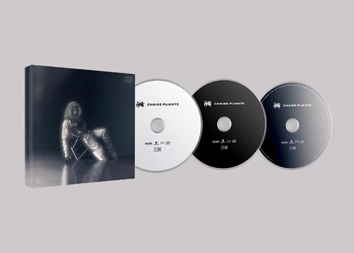

Hatik revient avec l’édition Deluxe de ses mixtapes chaise pliante
L’un des grand rappeur du moment, nous dévoile la chaise pliante version Deluxe de la chaise avec d’autres nouveaux morceaux
Le succès de la série Validé, réalisée par Franck Gastambide, a boosté sa visibilité dans le rap français. Il fait partie des rappeurs de la nouvelle vague de rap français ayant le plus de visibilité actuellement.. En début mars, il avait dévoilé le projet Chaise pliante II sur lequel on retrouvait Jok’Air, Médine et Hornet la Frappe, il a profité d’être au centre de l’attention pour envoyer 4 inédits début avril. 4 morceaux répartis sur ces 2 volumes du concept Chaise Pliante.
L’année 2020 qui signifie succès pour le jeune rappeur entre la série Validé et son morceau Angela, Hatik compte bien satisfaire son public avec l’édition Deluxe de ses tapes Chaise pliante. On compte 10 titres qui viennent agrandir sa discographie, dont un feat intitulé Plus riche avec Sofiane, ainsi qu’une collaboration avec Kolo. Il est également possible de commander le triple CD qui regroupe Chaise Pliante, Chaise Pliante II et les inédits de la version Deluxe (47 morceaux au total).. Même un vinyle (rouge) regroupant les freestyles Chaise Pliante est disponible.
"Validé" :le clip FLK de Hatik et Sam’s qui déchire
Le clip du morceau phare de la série dévoilé nous faire revivre les instants dans Validé.
Hatik fait grimper sa notoriété depuis la sortie de la série VALIDÉ
Après sa prestation dans la série Validé où Hatik joue le rôle principale Apach, il accumule des followers sur ses réseaux sociaux et voit ses streams en hausse.
Chaise pliante II : Du monde sur la mixtape
Après sa première mixtape “chaise pliante”, Hatik nous dévoile le tracklisting de la chaise pliante II
Hatik: Album “chaise pliante” certifié disque d’or
Hatik, acteur principale de la série “Validé” célèbre son premier disque d’or de sa carrière.